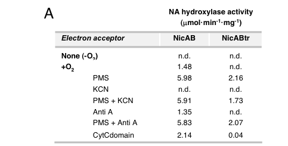

nicA encodes the small subunit of NicAB nicotinate dehydrogenase, the two-component enzyme that catalyzes the first step of aerobic nicotinate degradation in P. putida KT2440: hydroxylation of nicotinate to 6-hydroxynicotinate. NicA contributes iron-sulfur electron-transfer cofactors within the NicAB oxidoreductase complex.
| GO Term | Evidence | Action | Reason |
|---|---|---|---|
|
GO:0016491
oxidoreductase activity
|
IEA
GO_REF:0000120 |
MARK AS OVER ANNOTATED |
Summary: Generic oxidoreductase activity is less informative than GO:0016725 for the NicAB reaction.
Reason: The broader parent should not be the retained functional summary.
Supporting Evidence:
file:PSEPK/nicA/nicA-uniprot.txt
Reaction=2 Fe(III)-[cytochrome] + nicotinate + H2O = 2 Fe(II)-
file:PSEPK/nicA/nicA-deep-research-falcon.md
it is the electron-transfer **small subunit** required for NicAB function
|
|
GO:0046872
metal ion binding
|
IEA
GO_REF:0000002 |
MARK AS OVER ANNOTATED |
Summary: Generic metal ion binding is an uninformative parent for the supported iron-sulfur cluster binding.
Reason: Use the more specific Fe-S cluster term.
Supporting Evidence:
file:PSEPK/nicA/nicA-uniprot.txt
Note=Binds 2 [2Fe-2S] clusters per subunit.
file:PSEPK/nicA/nicA-deep-research-falcon.md
contains conserved cysteine motifs consistent with binding **two [2Fe–2S] clusters**
|
|
GO:0051536
iron-sulfur cluster binding
|
IEA
GO_REF:0000002 |
MARK AS OVER ANNOTATED |
Summary: Iron-sulfur cluster binding is true but less specific than the 2 iron, 2 sulfur cluster term already present.
Reason: Prefer GO:0051537 for this subunit.
Supporting Evidence:
file:PSEPK/nicA/nicA-uniprot.txt
Note=Binds 2 [2Fe-2S] clusters per subunit.
file:PSEPK/nicA/nicA-deep-research-falcon.md
contains conserved cysteine motifs consistent with binding **two [2Fe–2S] clusters**
|
|
GO:0051537
2 iron, 2 sulfur cluster binding
|
IEA
GO_REF:0000002 |
ACCEPT |
Summary: A 2Fe-2S cluster is the supported subunit-specific molecular function of NicA.
Reason: Retain as the subunit-specific function while modeling the full NicAB oxidoreductase activity as a contributed complex activity.
Supporting Evidence:
file:PSEPK/nicA/nicA-uniprot.txt
Name=[2Fe-2S] cluster; Xref=ChEBI:CHEBI:190135;
file:PSEPK/nicA/nicA-deep-research-falcon.md
explicitly equates it with the **small iron–sulfur subunit** of the **NicAB nicotinic-acid hydroxylase**
|
|
GO:1901848
nicotinate catabolic process
|
IDA
PMID:18678916 Deciphering the genetic determinants for aerobic nicotinic a... |
ACCEPT |
Summary: NicA is a direct subunit of the enzyme catalyzing the first step in aerobic nicotinate degradation.
Reason: Retain the pathway annotation.
Supporting Evidence:
file:PSEPK/nicA/nicA-uniprot.txt
nicotinate hydroxylation, the first step in the aerobic nicotinate
file:PSEPK/nicA/nicA-uniprot.txt
PATHWAY: Cofactor degradation; nicotinate degradation.
|
|
GO:0016725
oxidoreductase activity, acting on CH or CH2 groups
|
IDA
PMID:18678916 Deciphering the genetic determinants for aerobic nicotinic a... |
ACCEPT |
Summary: This oxidoreductase term captures the NicAB-catalyzed hydroxylation of nicotinate; a more specific GO term for nicotinate dehydrogenase is not present in the current GOA rows.
Reason: Retain as the best available molecular-function term.
Supporting Evidence:
file:PSEPK/nicA/nicA-uniprot.txt
Subunit of the two-component enzyme NicAB that mediates
file:PSEPK/nicA/nicA-uniprot.txt
Reaction=2 Fe(III)-[cytochrome] + nicotinate + H2O = 2 Fe(II)-
|
Q: Should NicA annotations consistently use a contributes_to qualifier for the NicAB nicotinate dehydrogenase reaction rather than implying that the small Fe-S subunit alone enables the complete oxidoreductase activity?
Suggested experts: GO annotation and bacterial nicotinate catabolism curators
Experiment: Purify NicA, NicB, and reconstituted NicAB to compare Fe-S binding, electron transfer, and nicotinate hydroxylation activity in the isolated subunits versus the assembled enzyme.
Type: in vitro enzyme reconstitution
This report is retrieval-only and is generated directly from Asta results.
search_papers_by_relevance with snippet_search.The research report should be a detailed narrative explaining the function, biological processes, and localization of the gene product. Citations should be given for all claims.
You should prioritize authoritative reviews and primary scientific literature when conducting research. You can supplement
this with annotations you find in gene/protein databases, but these can be outdated or inaccurate.
We are specifically interested in the primary function of the gene - for enzymes, what reaction is catalyzed, and what is the substrate specificity? For transporters, what is the substrate? For structural proteins or adapters, what is the broader structural role? For signaling molecules, what is the role in the pathway.
We are interested in where in or outside the cell the gene product carries out its function.
We are also interested in the signaling or biochemical pathways in which the gene functions. We are less interested in broad pleiotropic effects, except where these elucidate the precise role.
Include evidence where possible. We are interested in both experimental evidence as well as inference from structure, evolution, or bioinformatic analysis. Precise studies should be prioritized over high-throughput, where available.
Primary literature mapping of the P. putida KT2440 nic locus identifies nicA as PP_3947 and explicitly equates it with the small iron–sulfur subunit of the NicAB nicotinic-acid hydroxylase. NicA is described as ~23.8 kDa and contains conserved cysteine motifs consistent with binding two [2Fe–2S] clusters, matching the UniProt Q88FX9 description (Nicotinate dehydrogenase subunit A / “small subunit” with 2Fe–2S ferredoxin-like domains). (jimenez2008decipheringthegenetic pages 2-3, jimenez2008decipheringthegenetic pages 1-2)
In the P. putida KT2440 aerobic nicotinate (nicotinic acid; NA) pathway, the first committed step is an enzyme-catalyzed C6 hydroxylation of nicotinic acid to 6-hydroxynicotinic acid (6HNA). In KT2440 this activity is carried by a two-component hydroxylase, NicAB, with NicA as the Fe–S “small subunit” and NicB as the large catalytic/electron-transfer subunit. (jimenez2008decipheringthegenetic pages 1-2, jimenez2008decipheringthegenetic pages 2-3)
More broadly, recent synthesis of the field describes nicotinate dehydrogenases/hydroxylases (NDHase) as membrane-associated multi-component redox enzymes that function in connection with the membrane electron respiratory chain and are composed of iron–sulfur centers, flavin components (FAD/FMN), molybdenum-binding components, and sometimes cytochromes. (chen2023sourcescomponentsstructure pages 1-2, chen2023sourcescomponentsstructure pages 3-5)
Jiménez et al. define the KT2440 nic cluster and propose an aerobic pathway in which nicotinate carbon is funneled to central metabolism via maleamate/maleate and ultimately fumarate. After NicAB makes 6HNA, subsequent steps include: 6HNA → 2,5-dihydroxypyridine (2,5DHP) → N-formylmaleamic acid (NFM) → maleamic acid → maleate → fumarate. (jimenez2008decipheringthegenetic pages 1-2, jimenez2008decipheringthegenetic pages 2-3)
NicA is not a standalone catalyst; it is the electron-transfer small subunit required for NicAB function. Genetic disruption of nicA blocks growth on NA but not on 6HNA, placing NicA at the NA → 6HNA step. (jimenez2008decipheringthegenetic pages 2-3)
Jiménez et al. further show that expressing NicAB in otherwise NA-nonoxidizing Pseudomonas strains confers the ability to convert NA stoichiometrically into 6HNA, directly linking NicAB (and therefore NicA) to this transformation. (jimenez2008decipheringthegenetic pages 2-3)
KT2440 NicAB is reported as highly specific for nicotinic acid in the PNAS study. (jimenez2008decipheringthegenetic pages 2-3)
A 2023 critical review that compiles comparative substrate-scope data across NDHases notes that the NDHase from P. putida KT2440 can hydroxylate nicotinic acid but fails to hydroxylate 3-cyanopyridine, whereas some other bacteria possess NDHases with broader scope (including 3-cyanopyridine). (chen2023sourcescomponentsstructure pages 5-6)
Domain/cofactor architecture and role of NicA. NicA contains conserved motifs consistent with binding two [2Fe–2S] clusters and is homologous to electron-transfer subunits of xanthine dehydrogenase–family enzymes, supporting the role of NicA as an electron-transfer module within NicAB. (jimenez2008decipheringthegenetic pages 2-3, brickman2018thebordetellabronchiseptica pages 3-4)
Dependence on oxygen and respiratory components. NicAB hydroxylase activity is oxygen dependent (falls below detection anaerobically) and can be increased by adding an external electron acceptor (phenazine methosulfate; PMS). (jimenez2008decipheringthegenetic pages 2-3)
Cytochrome-c coupling and inhibitor evidence. Jiménez et al. present evidence that the C-terminal cytochrome c (CytC) domain of NicB is required for physiological electron transfer: truncation that removes the CytC domain abolishes activity, but activity can be restored by (i) providing PMS as an artificial terminal acceptor, or (ii) supplying the CytC domain in trans. Inhibition by KCN (cytochrome c oxidase inhibitor) but not by antimycin A supports electron transfer from NicB’s CytC domain to a cytochrome c oxidase, with O2 as the terminal electron acceptor. (jimenez2008decipheringthegenetic pages 3-4)
Expert synthesis (2023): NDHase systems are described as requiring the membrane electron respiratory chain and being built from Fe–S, flavin, molybdenum-binding, and cytochrome components, consistent with the mechanistic picture assembled from the KT2440 NicAB system. (chen2023sourcescomponentsstructure pages 1-2, chen2023sourcescomponentsstructure pages 3-5)
Jiménez et al. identify a contiguous nicTPFEDCXRAB cluster (14 kb) sufficient for aerobic NA degradation when transferred to other Pseudomonas hosts. (jimenez2008decipheringthegenetic pages 1-2)
Within the pathway:
- NicAB: NA → 6HNA (first step; NicA is the Fe–S small subunit). (jimenez2008decipheringthegenetic pages 1-2, jimenez2008decipheringthegenetic pages 2-3)
- NicC: 6HNA monooxygenase producing 2,5DHP (requires NADH and FAD in assay; ΔnicC resting cells convert NA to 6HNA, consistent with NicC acting downstream). (jimenez2008decipheringthegenetic pages 3-4)
- NicX: 2,5DHP dioxygenase (extradiol ring cleavage) yielding NFM; strict specificity for 2,5DHP, Fe-dependent reactivation, and 1 mol O2 consumed per mol 2,5DHP. (jimenez2008decipheringthegenetic pages 4-5)
- NicD: N-formylmaleamate deformylase (produces maleamic acid + formic acid); site-directed mutagenesis supports an α/β-hydrolase triad mechanism. (jimenez2008decipheringthegenetic pages 5-6)
- NicF: maleamate amidohydrolase (maleamic acid → maleate + NH3), contributing to ability to use NA as a nitrogen source. (jimenez2008decipheringthegenetic pages 5-6)
- NicE: maleate isomerase (maleate → fumarate, entry to Krebs cycle). (jimenez2008decipheringthegenetic pages 5-6)
Disruption of nicA (and of nicB, nicC, nicD, nicX) eliminates growth on NA as sole carbon source, supporting that these genes are necessary for NA catabolism. (jimenez2008decipheringthegenetic pages 1-2, jimenez2008decipheringthegenetic pages 2-3)
Complementation of nic-cluster mutants with a broad-host-range plasmid carrying the full cluster restores growth on NA, and expression of NicAB can confer NA-to-6HNA conversion to non-oxidizing Pseudomonas strains. (jimenez2008decipheringthegenetic pages 2-3)
Direct microscopy/biochemical fractionation localization for NicA (Q88FX9) was not retrieved in the accessible full texts in this run. However, multiple independent lines of evidence support that NicA functions as part of a respiratory-chain-coupled, effectively membrane-associated hydroxylase system:
Accordingly, the most defensible annotation is that NicA is a soluble Fe–S subunit that operates in a membrane-proximal, respiratory-chain-coupled NicAB complex, enabling NA hydroxylation while passing electrons to the membrane respiratory chain. (jimenez2008decipheringthegenetic pages 3-4, chen2023sourcescomponentsstructure pages 3-5)
A 2018 Applied and Environmental Microbiology study reports that FinR positively regulates the nicC and nicX operons involved in NA degradation. In an RNA-seq comparison, expression of eight nic genes decreased in a finR deletion mutant, whereas nicA, nicB, and nicS showed no difference, suggesting a distinct regulatory logic for the hydroxylase genes vs downstream steps. (xiao2018finrregulatesexpression pages 2-3)
The 2023 peer-reviewed critical review by Chen et al. (published March 2023; URL https://doi.org/10.4014/jmb.2302.02011) synthesizes current understanding of NDHase components, mechanism, and applications, and highlights persistent barriers: difficulty with heterologous expression (often inclusion bodies and loss of activity), limited gene/strain resources, and lack of resolved crystal structures; it calls out cryo-EM as a promising route for structural elucidation. (chen2023sourcescomponentsstructure pages 7-8, chen2023sourcescomponentsstructure pages 5-6)
Important limitation for this report: In the tool-accessible literature retrieved here, no 2023–2024 primary studies were found that directly present new structural/engineering results specifically for the P. putida KT2440 NicA/NicAB complex. The most authoritative functional genetics/biochemistry remains the 2008 PNAS characterization, supplemented by the 2023 review synthesis. (jimenez2008decipheringthegenetic pages 2-3, chen2023sourcescomponentsstructure pages 6-7)
A 2024 study provides mechanistic and structural analysis of a different Pseudomonas putida enzyme (HspB) involved in nicotine catabolism, not the KT2440 NicA system; it demonstrates the type of modern structural/computational workflow being applied to pyridine-ring transformations. Because it is not about NicA/NicAB, it is not used as direct functional evidence for Q88FX9. (Not cited as evidence for NicA due to non-overlap in target identity.)
NDHase-type enzymes enable selective C6 hydroxylation of pyridine substrates under mild conditions. The 2023 review reports industrial uptake: Mitsubishi commercialized a biocatalytic process producing pyridine intermediates, including use of “3-cyano-6-hydropyridine” (as stated) in imidacloprid production. (chen2023sourcescomponentsstructure pages 7-8)
Quantitative production examples compiled in the 2023 review include reported product concentrations of 50.38 g/L 6HNA and 5.77 g/L 3-cyano-6-hydroxypyridine in a biocatalytic process (with other reported values depending on conditions/strain). (chen2023sourcescomponentsstructure pages 6-7)
The same 2023 review describes adding NDHase-producing strains to wastewater treatment for nitrogen heterocycle removal, giving a quantitative example: Pseudomonas putida QP2 degraded 6-methylquinoline at 650 mg/L within 24 h at 28°C. (chen2023sourcescomponentsstructure pages 7-8)
Key numerical data relevant to pathway enzymes in KT2440 and to NDHase applications include:
Figure-level evidence from Jiménez et al. includes: (i) the nic gene cluster map and proposed NA degradation pathway, and (ii) a condition/inhibitor dependence summary for NicAB activity. (jimenez2008decipheringthegenetic media 3543f797, jimenez2008decipheringthegenetic media 74028b5a)
Gene product: NicA (Q88FX9; PP_3947; ndhS), [2Fe–2S]-binding small subunit of NicAB nicotinic acid hydroxylase. (jimenez2008decipheringthegenetic pages 2-3)
Primary biological role: Required for the initial step of aerobic nicotinate catabolism: nicotinic acid → 6-hydroxynicotinic acid, initiating the maleamate pathway that ultimately yields fumarate for central metabolism. (jimenez2008decipheringthegenetic pages 1-2, jimenez2008decipheringthegenetic pages 2-3)
Mechanistic role: Electron-transfer subunit with two [2Fe–2S] clusters; supports electron flux through NicB’s cytochrome c domain to cytochrome c oxidase (O2 terminal acceptor), consistent with a respiratory-chain-coupled hydroxylase. (jimenez2008decipheringthegenetic pages 2-3, jimenez2008decipheringthegenetic pages 3-4)
Likely localization: Functionally coupled to inner-membrane respiratory chain; best annotated as membrane-associated enzyme system (complex-level), though direct NicA subcellular localization was not retrieved. (jimenez2008decipheringthegenetic pages 3-4, chen2023sourcescomponentsstructure pages 3-5)
Substrate specificity: High for nicotinic acid in KT2440; reported inability to hydroxylate 3-cyanopyridine in KT2440 in a 2023 synthesis. (jimenez2008decipheringthegenetic pages 2-3, chen2023sourcescomponentsstructure pages 5-6)
| Feature | Summary Statement | Key Citations |
|---|---|---|
| Identity & Gene Context | nicA (PP_3947; ndhS) encodes the 23.8 kDa small subunit of a two-component nicotinic acid hydroxylase. It is located in the 14-kb nic gene cluster (nicTPFEDCXRAB). |
(jimenez2008decipheringthegenetic pages 2-3, jimenez2008decipheringthegenetic pages 1-2, chen2023sourcescomponentsstructure pages 3-5) |
| Enzyme Complex | Functions within the multimeric NicAB complex alongside NicB, a large subunit containing molybdopterin cytosine dinucleotide (MCD) and cytochrome c (CytC) domains. | (jimenez2008decipheringthegenetic pages 2-3, brickman2018thebordetellabronchiseptica pages 3-4) |
| Reaction Catalyzed | Catalyzes the initial aerobic hydroxylation of nicotinic acid (NA) to produce a stoichiometric amount of 6-hydroxynicotinic acid (6HNA). | (jimenez2008decipheringthegenetic pages 1-2, jimenez2008decipheringthegenetic pages 2-3) |
| Cofactors & Domains | Contains conserved cysteine motifs that bind two iron-sulfur [2Fe-2S] clusters, transferring electrons within the xanthine dehydrogenase-family enzyme complex. | (jimenez2008decipheringthegenetic pages 2-3, brickman2018thebordetellabronchiseptica pages 3-4, chen2023sourcescomponentsstructure pages 3-5) |
| Electron Acceptor Chain | O2-dependent reaction; electrons flow through the [2Fe-2S] clusters to the NicB CytC domain, then to cellular cytochrome c oxidase. Activity requires O2 or artificial acceptors like PMS. | (jimenez2008decipheringthegenetic pages 2-3, jimenez2008decipheringthegenetic pages 3-4) |
| Substrate Specificity | Highly specific for nicotinic acid; P. putida KT2440 NicAB fails to hydroxylate 3-cyanopyridine or other tested N-heterocycles. | (chen2023sourcescomponentsstructure pages 5-6, jimenez2008decipheringthegenetic pages 1-2, jimenez2008decipheringthegenetic pages 2-3) |
| Genetic Evidence | Disruption of nicA abolishes growth on NA but not 6HNA. Heterologous expression of nicAB enables non-oxidizing strains to convert NA to 6HNA. |
(jimenez2008decipheringthegenetic pages 2-3, jimenez2008decipheringthegenetic pages 1-2) |
| Pathway Context | Catalyzes the first step of the aerobic maleamate pathway for NA degradation, preceding downstream processing by NicC, NicX, NicD, NicF, and NicE. | (jimenez2008decipheringthegenetic pages 2-3, jimenez2008decipheringthegenetic pages 1-2) |
| Localization | Component of a membrane-associated system due to necessary interactions with the cell membrane's electron respiratory chain. | (chen2023sourcescomponentsstructure pages 3-5, chen2023sourcescomponentsstructure pages 1-2) |
| Quantitative Data | Optimal activity at 30°C and pH 7.5. Recombinant assays showed baseline relative activity of 1.48 with O2, which increased to 5.98 with addition of PMS. | (chen2023sourcescomponentsstructure pages 3-5, jimenez2008decipheringthegenetic pages 2-3) |
| Biocatalytic Applications | Enables green, selective synthesis of 6HNA, a valuable intermediate for pharmaceuticals and neonicotinoid insecticides, though heterologous expression outside Pseudomonas often forms inclusion bodies. | (chen2023sourcescomponentsstructure pages 5-6, chen2023sourcescomponentsstructure pages 7-8, chen2023sourcescomponentsstructure pages 6-7) |
Table: A summary of the biochemical, genetic, and functional characteristics of the Pseudomonas putida KT2440 nicA gene product (NicA/NdhS), highlighting its role as the [2Fe-2S]-containing small subunit of nicotinic acid hydroxylase.
References
(jimenez2008decipheringthegenetic pages 2-3): José I. Jiménez, Ángeles Canales, Jesús Jiménez-Barbero, Krzysztof Ginalski, Leszek Rychlewski, José L. García, and Eduardo Díaz. Deciphering the genetic determinants for aerobic nicotinic acid degradation: the nic cluster from pseudomonas putida kt2440. Proceedings of the National Academy of Sciences, 105:11329-11334, Aug 2008. URL: https://doi.org/10.1073/pnas.0802273105, doi:10.1073/pnas.0802273105. This article has 173 citations and is from a highest quality peer-reviewed journal.
(jimenez2008decipheringthegenetic pages 1-2): José I. Jiménez, Ángeles Canales, Jesús Jiménez-Barbero, Krzysztof Ginalski, Leszek Rychlewski, José L. García, and Eduardo Díaz. Deciphering the genetic determinants for aerobic nicotinic acid degradation: the nic cluster from pseudomonas putida kt2440. Proceedings of the National Academy of Sciences, 105:11329-11334, Aug 2008. URL: https://doi.org/10.1073/pnas.0802273105, doi:10.1073/pnas.0802273105. This article has 173 citations and is from a highest quality peer-reviewed journal.
(chen2023sourcescomponentsstructure pages 1-2): Zhi Chen, Xiangjing Xu, Xin Ju, Lishi Yan, Liangzhi Li, and Lin Yang. Sources, components, structure, catalytic mechanism and applications: a critical review on nicotinate dehydrogenase. Journal of Microbiology and Biotechnology, 33:707-714, Mar 2023. URL: https://doi.org/10.4014/jmb.2302.02011, doi:10.4014/jmb.2302.02011. This article has 1 citations and is from a peer-reviewed journal.
(chen2023sourcescomponentsstructure pages 3-5): Zhi Chen, Xiangjing Xu, Xin Ju, Lishi Yan, Liangzhi Li, and Lin Yang. Sources, components, structure, catalytic mechanism and applications: a critical review on nicotinate dehydrogenase. Journal of Microbiology and Biotechnology, 33:707-714, Mar 2023. URL: https://doi.org/10.4014/jmb.2302.02011, doi:10.4014/jmb.2302.02011. This article has 1 citations and is from a peer-reviewed journal.
(chen2023sourcescomponentsstructure pages 5-6): Zhi Chen, Xiangjing Xu, Xin Ju, Lishi Yan, Liangzhi Li, and Lin Yang. Sources, components, structure, catalytic mechanism and applications: a critical review on nicotinate dehydrogenase. Journal of Microbiology and Biotechnology, 33:707-714, Mar 2023. URL: https://doi.org/10.4014/jmb.2302.02011, doi:10.4014/jmb.2302.02011. This article has 1 citations and is from a peer-reviewed journal.
(brickman2018thebordetellabronchiseptica pages 3-4): Timothy J. Brickman and Sandra K. Armstrong. The bordetella bronchiseptica nic locus encodes a nicotinic acid degradation pathway and the 6‐hydroxynicotinate‐responsive regulator bpsr. Molecular Microbiology, 108:397-409, May 2018. URL: https://doi.org/10.1111/mmi.13943, doi:10.1111/mmi.13943. This article has 13 citations and is from a domain leading peer-reviewed journal.
(jimenez2008decipheringthegenetic pages 3-4): José I. Jiménez, Ángeles Canales, Jesús Jiménez-Barbero, Krzysztof Ginalski, Leszek Rychlewski, José L. García, and Eduardo Díaz. Deciphering the genetic determinants for aerobic nicotinic acid degradation: the nic cluster from pseudomonas putida kt2440. Proceedings of the National Academy of Sciences, 105:11329-11334, Aug 2008. URL: https://doi.org/10.1073/pnas.0802273105, doi:10.1073/pnas.0802273105. This article has 173 citations and is from a highest quality peer-reviewed journal.
(jimenez2008decipheringthegenetic pages 4-5): José I. Jiménez, Ángeles Canales, Jesús Jiménez-Barbero, Krzysztof Ginalski, Leszek Rychlewski, José L. García, and Eduardo Díaz. Deciphering the genetic determinants for aerobic nicotinic acid degradation: the nic cluster from pseudomonas putida kt2440. Proceedings of the National Academy of Sciences, 105:11329-11334, Aug 2008. URL: https://doi.org/10.1073/pnas.0802273105, doi:10.1073/pnas.0802273105. This article has 173 citations and is from a highest quality peer-reviewed journal.
(jimenez2008decipheringthegenetic pages 5-6): José I. Jiménez, Ángeles Canales, Jesús Jiménez-Barbero, Krzysztof Ginalski, Leszek Rychlewski, José L. García, and Eduardo Díaz. Deciphering the genetic determinants for aerobic nicotinic acid degradation: the nic cluster from pseudomonas putida kt2440. Proceedings of the National Academy of Sciences, 105:11329-11334, Aug 2008. URL: https://doi.org/10.1073/pnas.0802273105, doi:10.1073/pnas.0802273105. This article has 173 citations and is from a highest quality peer-reviewed journal.
(xiao2018finrregulatesexpression pages 2-3): Yujie Xiao, Wenjing Zhu, Huizhong Liu, Hailing Nie, Wenli Chen, and Qiaoyun Huang. Finr regulates expression of nicc and nicx operons, involved in nicotinic acid degradation in pseudomonas putida kt2440. Applied and Environmental Microbiology, Oct 2018. URL: https://doi.org/10.1128/aem.01210-18, doi:10.1128/aem.01210-18. This article has 10 citations and is from a peer-reviewed journal.
(chen2023sourcescomponentsstructure pages 7-8): Zhi Chen, Xiangjing Xu, Xin Ju, Lishi Yan, Liangzhi Li, and Lin Yang. Sources, components, structure, catalytic mechanism and applications: a critical review on nicotinate dehydrogenase. Journal of Microbiology and Biotechnology, 33:707-714, Mar 2023. URL: https://doi.org/10.4014/jmb.2302.02011, doi:10.4014/jmb.2302.02011. This article has 1 citations and is from a peer-reviewed journal.
(chen2023sourcescomponentsstructure pages 6-7): Zhi Chen, Xiangjing Xu, Xin Ju, Lishi Yan, Liangzhi Li, and Lin Yang. Sources, components, structure, catalytic mechanism and applications: a critical review on nicotinate dehydrogenase. Journal of Microbiology and Biotechnology, 33:707-714, Mar 2023. URL: https://doi.org/10.4014/jmb.2302.02011, doi:10.4014/jmb.2302.02011. This article has 1 citations and is from a peer-reviewed journal.
(jimenez2008decipheringthegenetic media 3543f797): José I. Jiménez, Ángeles Canales, Jesús Jiménez-Barbero, Krzysztof Ginalski, Leszek Rychlewski, José L. García, and Eduardo Díaz. Deciphering the genetic determinants for aerobic nicotinic acid degradation: the nic cluster from pseudomonas putida kt2440. Proceedings of the National Academy of Sciences, 105:11329-11334, Aug 2008. URL: https://doi.org/10.1073/pnas.0802273105, doi:10.1073/pnas.0802273105. This article has 173 citations and is from a highest quality peer-reviewed journal.
(jimenez2008decipheringthegenetic media 74028b5a): José I. Jiménez, Ángeles Canales, Jesús Jiménez-Barbero, Krzysztof Ginalski, Leszek Rychlewski, José L. García, and Eduardo Díaz. Deciphering the genetic determinants for aerobic nicotinic acid degradation: the nic cluster from pseudomonas putida kt2440. Proceedings of the National Academy of Sciences, 105:11329-11334, Aug 2008. URL: https://doi.org/10.1073/pnas.0802273105, doi:10.1073/pnas.0802273105. This article has 173 citations and is from a highest quality peer-reviewed journal.

id: Q88FX9
gene_symbol: nicA
product_type: PROTEIN
status: DRAFT
taxon:
id: NCBITaxon:160488
label: Pseudomonas putida (strain ATCC 47054 / DSM 6125 / CFBP 8728 / NCIMB 11950 / KT2440)
description: 'nicA encodes the small subunit of NicAB nicotinate dehydrogenase, the two-component enzyme that catalyzes the first step of aerobic nicotinate degradation in P. putida KT2440: hydroxylation of nicotinate to 6-hydroxynicotinate. NicA contributes iron-sulfur electron-transfer cofactors within the NicAB oxidoreductase complex.'
existing_annotations:
- term:
id: GO:0016491
label: oxidoreductase activity
evidence_type: IEA
original_reference_id: GO_REF:0000120
review:
summary: Generic oxidoreductase activity is less informative than GO:0016725 for the NicAB reaction.
action: MARK_AS_OVER_ANNOTATED
reason: The broader parent should not be the retained functional summary.
supported_by:
- reference_id: file:PSEPK/nicA/nicA-uniprot.txt
supporting_text: Reaction=2 Fe(III)-[cytochrome] + nicotinate + H2O = 2 Fe(II)-
- reference_id: file:PSEPK/nicA/nicA-deep-research-falcon.md
supporting_text: it is the electron-transfer **small subunit** required for NicAB function
- term:
id: GO:0046872
label: metal ion binding
evidence_type: IEA
original_reference_id: GO_REF:0000002
review:
summary: Generic metal ion binding is an uninformative parent for the supported iron-sulfur cluster binding.
action: MARK_AS_OVER_ANNOTATED
reason: Use the more specific Fe-S cluster term.
supported_by:
- reference_id: file:PSEPK/nicA/nicA-uniprot.txt
supporting_text: Note=Binds 2 [2Fe-2S] clusters per subunit.
- reference_id: file:PSEPK/nicA/nicA-deep-research-falcon.md
supporting_text: contains conserved cysteine motifs consistent with binding **two [2Fe–2S] clusters**
- term:
id: GO:0051536
label: iron-sulfur cluster binding
evidence_type: IEA
original_reference_id: GO_REF:0000002
review:
summary: Iron-sulfur cluster binding is true but less specific than the 2 iron, 2 sulfur cluster term already present.
action: MARK_AS_OVER_ANNOTATED
reason: Prefer GO:0051537 for this subunit.
supported_by:
- reference_id: file:PSEPK/nicA/nicA-uniprot.txt
supporting_text: Note=Binds 2 [2Fe-2S] clusters per subunit.
- reference_id: file:PSEPK/nicA/nicA-deep-research-falcon.md
supporting_text: contains conserved cysteine motifs consistent with binding **two [2Fe–2S] clusters**
- term:
id: GO:0051537
label: 2 iron, 2 sulfur cluster binding
evidence_type: IEA
original_reference_id: GO_REF:0000002
review:
summary: A 2Fe-2S cluster is the supported subunit-specific molecular function of NicA.
action: ACCEPT
reason: Retain as the subunit-specific function while modeling the full NicAB oxidoreductase activity as a contributed complex activity.
supported_by:
- reference_id: file:PSEPK/nicA/nicA-uniprot.txt
supporting_text: Name=[2Fe-2S] cluster; Xref=ChEBI:CHEBI:190135;
- reference_id: file:PSEPK/nicA/nicA-deep-research-falcon.md
supporting_text: explicitly equates it with the **small iron–sulfur subunit** of the **NicAB nicotinic-acid hydroxylase**
- term:
id: GO:1901848
label: nicotinate catabolic process
evidence_type: IDA
original_reference_id: PMID:18678916
review:
summary: NicA is a direct subunit of the enzyme catalyzing the first step in aerobic nicotinate degradation.
action: ACCEPT
reason: Retain the pathway annotation.
supported_by:
- reference_id: file:PSEPK/nicA/nicA-uniprot.txt
supporting_text: nicotinate hydroxylation, the first step in the aerobic nicotinate
- reference_id: file:PSEPK/nicA/nicA-uniprot.txt
supporting_text: 'PATHWAY: Cofactor degradation; nicotinate degradation.'
- term:
id: GO:0016725
label: oxidoreductase activity, acting on CH or CH2 groups
evidence_type: IDA
original_reference_id: PMID:18678916
review:
summary: This oxidoreductase term captures the NicAB-catalyzed hydroxylation of nicotinate; a more specific GO term for nicotinate dehydrogenase is not present in the current GOA rows.
action: ACCEPT
reason: Retain as the best available molecular-function term.
supported_by:
- reference_id: file:PSEPK/nicA/nicA-uniprot.txt
supporting_text: Subunit of the two-component enzyme NicAB that mediates
- reference_id: file:PSEPK/nicA/nicA-uniprot.txt
supporting_text: Reaction=2 Fe(III)-[cytochrome] + nicotinate + H2O = 2 Fe(II)-
references:
- id: GO_REF:0000120
title: Combined automated GO annotation using multiple IEA methods.
findings:
- statement: Combined automated methods provide provisional GO annotations that require gene-level review.
- id: file:PSEPK/nicA/nicA-uniprot.txt
title: UniProtKB reviewed entry for nicA
findings:
- statement: UniProt identifies NicA as the small subunit of NicAB nicotinate dehydrogenase, with 2Fe-2S cluster binding and nicotinate-catabolic pathway placement.
- id: GO_REF:0000002
title: Gene Ontology annotation through association of InterPro records with GO terms.
findings:
- statement: InterPro2GO supplies domain/family-based automated annotations that require review against the gene-specific UniProt and literature context.
- id: PMID:18678916
title: 'Deciphering the genetic determinants for aerobic nicotinic acid degradation: the nic cluster from Pseudomonas putida KT2440.'
findings:
- statement: The nic cluster paper identified NicAB as catalyzing nicotinate hydroxylation in aerobic nicotinic acid degradation.
- id: PMID:19118407
title: Cloning, heterologous expression, and functional characterization of the nicotinate dehydrogenase gene from Pseudomonas putida KT2440.
findings:
- statement: Additional biochemical work supports NicAB nicotinate dehydrogenase activity.
- id: file:PSEPK/nicA/nicA-deep-research-falcon.md
title: Falcon deep research on nicA (Edison Scientific Literature)
findings:
- statement: Primary-literature mapping of the nic locus identifies nicA (PP_3947) as the small iron-sulfur subunit of the NicAB nicotinic-acid hydroxylase, matching the UniProt Q88FX9 description.
supporting_text: explicitly equates it with the **small iron–sulfur subunit** of the **NicAB nicotinic-acid hydroxylase**
- statement: NicA contains conserved cysteine motifs consistent with binding two [2Fe-2S] clusters, consistent with an electron-transfer module within NicAB.
supporting_text: contains conserved cysteine motifs consistent with binding **two [2Fe–2S] clusters**
- statement: NicA is not a standalone catalyst but the electron-transfer small subunit required for NicAB function.
supporting_text: it is the electron-transfer **small subunit** required for NicAB function
- statement: The first committed step of the aerobic pathway is C6 hydroxylation of nicotinic acid to 6-hydroxynicotinic acid, carried by the two-component NicAB hydroxylase.
supporting_text: the first committed step is an enzyme-catalyzed **C6 hydroxylation** of nicotinic acid to **6-hydroxynicotinic acid (6HNA)**
- statement: Genetic disruption of nicA blocks growth on NA but not on 6HNA, placing NicA at the NA-to-6HNA step.
supporting_text: Genetic disruption of **nicA** blocks growth on NA but not on 6HNA
- statement: KT2440 NicAB is highly specific for nicotinic acid.
supporting_text: KT2440 NicAB is reported as **highly specific for nicotinic acid**
- statement: NicA initiates the maleamate pathway, which ultimately yields fumarate for central metabolism.
supporting_text: initiating the **maleamate pathway** that ultimately yields fumarate for central metabolism
- statement: NicA is best annotated as a soluble Fe-S subunit operating in a membrane-proximal, respiratory-chain-coupled NicAB complex.
supporting_text: NicA is a **soluble Fe–S subunit that operates in a membrane-proximal, respiratory-chain-coupled NicAB complex**
core_functions:
- description: As the small iron-sulfur subunit of NicAB, NicA contributes to nicotinate hydroxylation to 6-hydroxynicotinate, the first step of aerobic nicotinate degradation.
molecular_function:
id: GO:0051537
label: 2 iron, 2 sulfur cluster binding
contributes_to_molecular_function:
id: GO:0016725
label: oxidoreductase activity, acting on CH or CH2 groups
directly_involved_in:
- id: GO:1901848
label: nicotinate catabolic process
supported_by:
- reference_id: file:PSEPK/nicA/nicA-uniprot.txt
supporting_text: Subunit of the two-component enzyme NicAB that mediates
- reference_id: file:PSEPK/nicA/nicA-uniprot.txt
supporting_text: degradation pathway. Mediates conversion of nicotinate into 6-
- reference_id: PMID:18678916
supporting_text: hydroxylation of NA is catalyzed by a two-component hydroxylase (NicAB)
- reference_id: file:PSEPK/nicA/nicA-deep-research-falcon.md
supporting_text: it is the electron-transfer **small subunit** required for NicAB function
- reference_id: file:PSEPK/nicA/nicA-deep-research-falcon.md
supporting_text: initiating the **maleamate pathway** that ultimately yields fumarate for central metabolism
proposed_new_terms: []
suggested_questions:
- question: Should NicA annotations consistently use a contributes_to qualifier for the NicAB nicotinate dehydrogenase reaction rather than implying that the small Fe-S subunit alone enables the complete oxidoreductase activity?
experts:
- GO annotation and bacterial nicotinate catabolism curators
suggested_experiments:
- description: Purify NicA, NicB, and reconstituted NicAB to compare Fe-S binding, electron transfer, and nicotinate hydroxylation activity in the isolated subunits versus the assembled enzyme.
experiment_type: in vitro enzyme reconstitution
{kind=link}